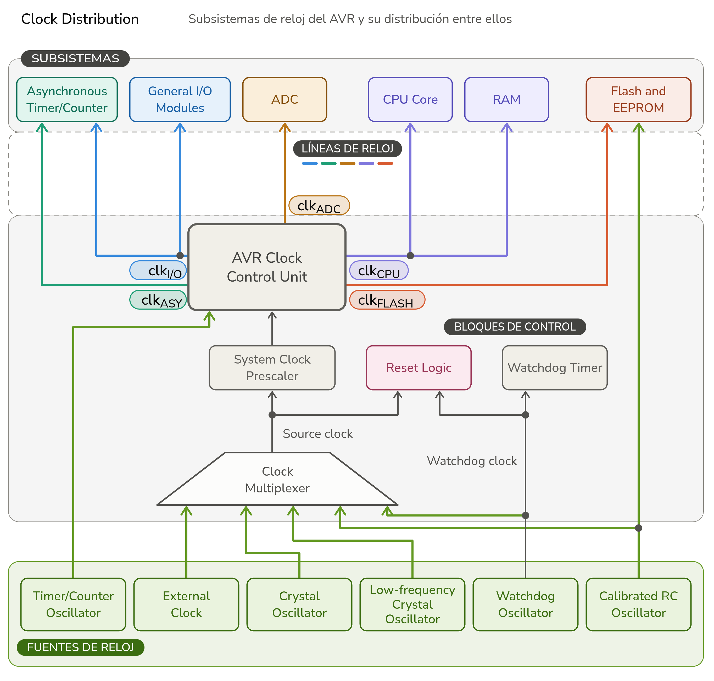
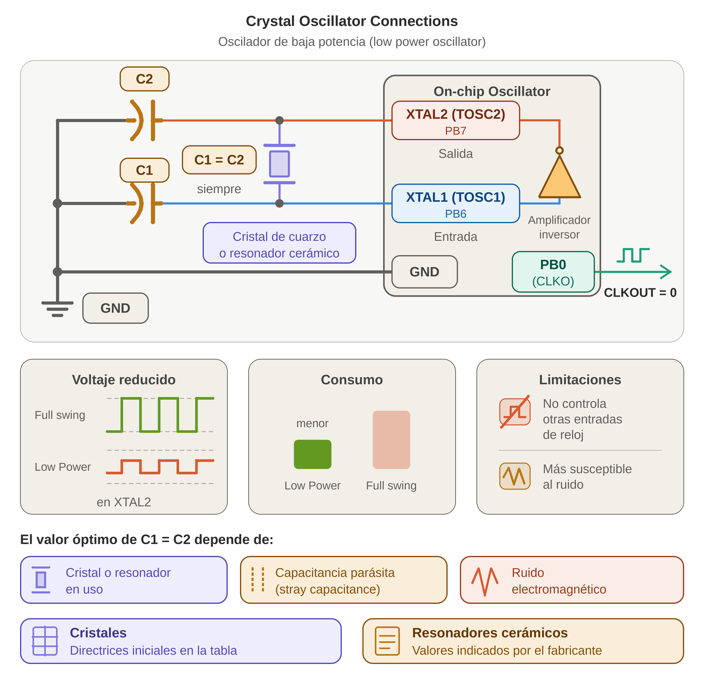
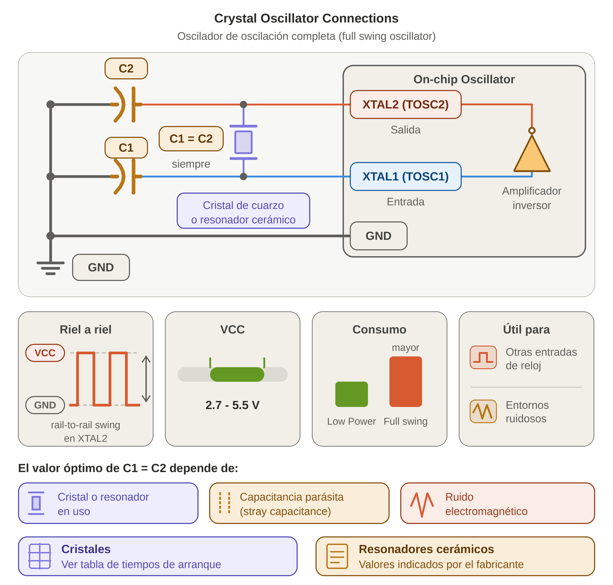

SISTEMAS DE RELOJ Y OPCIONES
INTRODUCCIÓN
El reloj o señal de reloj es una señal de onda cuadrada de alta frecuencia que gobierna y rige cada uno de los eventos secuenciales del circuito lógico síncrono.
El sistema de reloj del AVR es un subsistema complejo que proporciona la señal de reloj para el núcleo (core) y los periféricos. El sistema de reloj del AVR es flexible y puede configurarse para satisfacer las necesidades de la aplicación.
La CPU de un AVR está construida internamente como una máquina de estados finitos compleja y circuitos secuenciales (basados en flip-flops). Sin una transición de flanco de reloj (de bajo a alto, o flanco de subida), los periféricos, los registros internos, los contadores y la Unidad Lógica Aritmética (ALU) simplemente permanecerían estáticos. Cada ciclo de reloj (CK) le indica a los transistores cuándo dispararse, cuándo propagar los datos a través del bus interno y cuándo almacenar el resultado en los registros de trabajo o en la memoria SRAM.
1. EJECUCIÓN DE INSTRUCCIONES Y RENDIMIENTO
Los microcontroladores AVR se basan en una arquitectura RISC mejorada que implementa una canalización (pipelining) de dos etapas (Two-Stage Pipelining):
- 1. Búsqueda (Fetch): Se extrae la instrucción de la memoria de programa.
- 2. Ejecución (Execute): Se decodifica y se ejecuta la instrucción.
El pipeline del AVR procesa la búsqueda de la siguiente instrucción al mismo tiempo que ejecuta la instrucción actual. Debido a este solapamiento, en cada ciclo de reloj se termina de ejecutar una instrucción.
Esto significa que la gran mayoría de las instrucciones se ejecutan en un solo ciclo de reloj (CLKCPU). Por lo tanto, el reloj determina directamente la velocidad de procesamiento del microcontrolador, alcanzando un rendimiento de hasta 20 MIPS (millones de instrucciones por segundo)a 20 MHz.
2. SISTEMAS DE RELOJ Y SU DISTRIBUCIÓN
Dentro del ATmega48A/PA/ 88A/PA/ 168A/PA/ 328/P , la señal del reloj principal no alimenta a todo de la misma manera; se distribuye a través de un árbol de distribución de reloj hacia subsistemas especializados e independientes para optimizar el consumo de energía
La Figura siguiente detalla los subsistemas de reloj en el AVR y cómo se distribuyen entre ellos. No es necesario que todas las fuentes de reloj estén activas en un momento dado. La flexibilidad de la arquitectura del reloj ayuda a reducir el consumo de energía al conectar únicamente los subsistemas de reloj periféricos necesarios para la aplicación en ejecución, tal como se describe en ”Power Management and Sleep Modes”.

2.1. Reloj de la CPU (CPU Clock) – clkCPU
El reloj de la CPU se encarga de dirigir los circuitos principales del núcleo (core), los cuales operan en los registros de trabajo de propósito general (general purpose working registers), la unidad lógica aritmética (ALU) y la memoria de datos (SRAM). El acceso a la memoria Flash y a la EEPROM también depende del reloj de la CPU.
2.2. Reloj de E/S (I/O Clock) – clkI/O
El reloj de E/S se utiliza para la mayoría de los periféricos, tales como los temporizadores/contadores (Timer/Counters), la interfaz serial universal (USART), la interfaz periférica serial (SPI) y el convertidor analógico-digital (ADC). El reloj de E/S también es utilizado por el subsistema de interrupciones externas (external interrupts).
Nota: Para minimizar el consumo de energía en los modos de suspensión (sleep modes), el reloj de E/S puede detenerse para determinados periféricos.
2.3. Reloj de Flash (Flash Clock) – clkFLASH
El reloj de Flash controla la interfaz del bus de la memoria Flash (Flash memory bus interface). El reloj de Flash opera normalmente al mismo ritmo que el reloj de la CPU (clkCPU).
2.4. Reloj Asíncrono (Asynchronous Clock) – clkASY>
El reloj asíncrono permite que determinados periféricos (como el Temporizador/Contador2) operen de forma independiente del reloj principal de la CPU (clkCPU). Esto es especialmente útil cuando se utiliza un oscilador externo de baja frecuencia (como un cristal de reloj de 32.768 kHz) para el conteo en tiempo real (RTC).
2.5. Reloj del ADC (ADC Clock) – clkADC
El convertidor analógico-digital (ADC) cuenta con su propio reloj dedicado para permitir la conversión de señales analógicas mientras el reloj de E/S se encuentra detenido o ralentizado (por ejemplo, en el modo de reducción de ruido del ADC - ADC Noise Reduction Mode).
3. FUENTES DE RELOJ (CLOCK SOURCES) FISICAS CONFIGURABLES POR FUSIBLES
El dispositivo cuenta con varias opciones de fuentes de reloj para el oscilador principal (main oscillator), las cuales se seleccionan mediante bits de configuración de hardware llamados fusibles (fuses, específicamente los bits CKSEL3...0). Los bits de fusibles son celdas de memoria no volátil independientes del espacio de programa Flash. No se pueden modificar mediante instrucciones normales de ejecución de código en C o ensamblador (a menos que se use programación paralela, SPI de alto voltaje o bootloaders dedicados).
Estos bits de fusible permiten seleccionar entre diferentes tipos de osciladores, como osciladores de cristal, osciladores RC internos y relojes externos. La selección adecuada de la fuente de reloj es crucial para garantizar un funcionamiento estable y eficiente del microcontrolador en diversas aplicaciones.
Cuando el microcontrolador se libera del estado de reset, la lógica de control del hardware lee el estado físico de los fusibles CKSEL3...0 (junto con el fusible SUT para el tiempo de arranque) y multiplexa físicamente la circuitería interna para engancharse a una de las siguientes cuatro familias de osciladores disponibles en el silicio.
Aquí se encuentra la tabla de configuración de los bits de fusible para las opciones de fuente de reloj (Clock Options)
| Opción de Reloj del Dispositivo (Device Clocking Option) | CKSEL3...0 |
|---|---|
| Oscilador de Cristal de Baja Potencia (Low Power Crystal Oscillator) Optimizado para cristales de cuarzo estándar de 400 kHz a 16 MHz (o hasta 20 MHz dependiendo del voltaje y modelo) |
1111 - 1000 |
| Oscilador de Cristal de Oscilación Completa (Full Swing Crystal Oscillator) | 0111 - 0110 |
| Oscilador de Cristal de Baja Frecuencia (Low Frequency Crystal Oscillator) | 0101 - 0100 |
| Oscilador RC Interno de 128kHz (Internal 128kHz RC Oscillator) Un oscilador interno de baja potencia y baja frecuencia utilizado principalmente por el temporizador perro guardián (Watchdog Timer - WDT) y durante el arranque (start-up) |
0011 |
| Oscilador RC Interno Calibrado (Calibrated Internal RC Oscillator) Proporciona una frecuencia de 8 MHz (con calibración de fábrica configurable a otras frecuencias mediante el registro OSCCAL) |
0010 |
| Reloj Externo (External Clock) Entrada de señal de reloj digital externa aplicada directamente en los pines XTAL1 y XTAL2.
|
0000 |
| Reservado (Reserved) | 0001 |
|
Nota: Device Clocking Options Select(1) 1. Para todos los fusibles, "1" significa no programado (unprogrammed) mientras que "0" significa programado (programmed). |
|
3.1. Fuente de Reloj por Defecto
El dispositivo se suministra de fábrica con el oscilador RC interno (internal RC oscillator) a 8.0 MHz y con el fusible CKDIV8 programado , lo que resulta en un reloj del sistema (system clock) de 1.0 MHz. El tiempo de arranque (startup time) se configura al máximo y el período de tiempo de espera (time-out period) se habilita (CKSEL = "0010", SUT = "10", CKDIV8 = "0"). Esta configuración por defecto garantiza que cualquier usuario pueda establecer la configuración de la fuente de reloj deseada utilizando cualquier interfaz de programación disponible.
3.2. Secuencia de Arranque del Reloj (Clock Startup Sequence)
Cualquier fuente de reloj necesita un voltaje VCC suficiente para comenzar a oscilar y un número mínimo de ciclos de oscilación antes de que pueda considerarse estable.
Para asegurar un VCC suficiente, el dispositivo emite un reset interno con un retraso de tiempo de espera (tTOUT) después de que el reset del dispositivo sea liberado por todas las demás fuentes de reset. La sección “System Control and Reset” describe las condiciones de inicio para el reset interno. El retraso (tTOUT) es temporizado a partir del oscilador del Perro Guardián (Watchdog Oscillator) y el número de ciclos en el retraso se configura mediante los bits de fusible SUTx y CKSELx. Los retrasos seleccionables se muestran en la Tabla siguiente. La frecuencia del oscilador del Perro Guardián depende del voltaje, tal como se muestra en “Typical Characteristics – (TA = -40°C a 85°C)” .
| Tiempo de espera típico (Typ Time-out VCC = 5.0V) |
Tiempo de espera típico (Typ Time-out VCC = 3.0V) |
Número de ciclos (Number of Cycles) |
|---|---|---|
| 0 ms | 0 ms | 0 |
| 4.1 ms | 4.3 ms | 512 |
| 65 ms | 69 ms | 8K (8,192) |
El propósito principal del retardo (
Se requiere que el oscilador oscile durante un número mínimo de ciclos antes de que el reloj se considere estable. Un contador de rizo interno (
La secuencia de arranque del reloj incluye tanto el retardo de tiempo de espera como el tiempo de arranque cuando el dispositivo se inicia desde el estado de
3. OSCILADOR DE CRISTAL DE BAJA POTENCIA (Low Power Crystal Oscillator)
Los pines XTAL1 y XTAL2 son la entrada y la salida, respectivamente, de un amplificador inversor (inverting amplifier) que puede configurarse para su uso como un oscilador en el chip (On-chip Oscillator), tal como se muestra en la figura adjunta. Se puede utilizar tanto un cristal de cuarzo (quartz crystal) como un resonador cerámico (ceramic resonator).
Este oscilador de cristal es un oscilador de baja potencia (low power oscillator), con una oscilación de voltaje reducida (reduced voltage swing) en la salida XTAL2. Proporciona el menor consumo de energía (power consumption), pero no es capaz de controlar otras entradas de reloj (clock inputs) y puede ser más susceptible al ruido en entornos ruidosos (noisy environments). En estos casos, consulte la sección Oscilador de Cristal de Oscilación Completa (Full Swing Crystal Oscillator).

C1 y C2 deben ser siempre iguales tanto para los cristales como para los resonadores. El valor óptimo de los condensadores depende del cristal o resonador en uso, de la cantidad de capacitancia parásita (stray capacitance) y del ruido electromagnético del entorno. En la Tabla siguiente se ofrecen algunas directrices iniciales para elegir los condensadores que se utilizarán con los cristales. Para los resonadores cerámicos, se deben utilizar los valores de los condensadores indicados por el fabricante.
El oscilador de baja potencia (
El modo de operación se selecciona mediante los fusibles CKSEL3...1, tal como se muestra en la Tabla siguiente.
| Rango de frecuencia (Frequency Range) [MHz] |
Rango recomendado para los condensadores C1 y C2 [pF] |
CKSEL3...1 (1) |
|---|---|---|
| 0.4 - 0.9 | – | 100(2) |
| 0.9 - 3.0 | 12 - 22 | 101 |
| 3.0 - 8.0 | 12 - 22 | 110 |
| 8.0 - 16.0 | 12 - 22 | 111 |
|
Notas: 1. Estos son los ajustes de CKSEL recomendados para los diferentes rangos de frecuencia.2. Esta opción no debe usarse con cristales, únicamente con resonadores cerámicos ( 3. Si la frecuencia del cristal excede la especificación del dispositivo (depende de VCC), se puede programar el fusible CKDIV8 para dividir la frecuencia interna por 8. Debe garantizarse que el reloj dividido resultante cumpla con la especificación de frecuencia del dispositivo.
|
||
El fusible CKSEL0 junto con los fusibles SUT1...0 seleccionan los tiempos de arranque (
| Fuente del oscilador / Condiciones de potencia ( |
Tiempo de arranque desde |
Retardo adicional desde (VCC = 5.0V) |
CKSEL0 |
SUT1...0 |
|---|---|---|---|---|
| Resonador cerámico, subida rápida de potencia ( |
258 CK | 14 CK + 4.1ms (1) | 0 | 00 |
| Resonador cerámico, subida lenta de potencia ( |
258 CK | 14 CK + 65ms (1) | 0 | 01 |
| Resonador cerámico, BOD habilitado ( |
1K CK | 14 CK (2) | 0 | 10 |
| Resonador cerámico, subida rápida de potencia ( |
1K CK | 14 CK + 4.1ms (2) | 0 | 11 |
| Resonador cerámico, subida lenta de potencia ( |
1K CK | 14 CK + 65ms (2) | 1 | 00 |
| Oscilador de cristal, BOD habilitado ( |
16K CK | 14 CK | 1 | 01 |
| Oscilador de cristal, subida rápida de potencia ( |
16K CK | 14 CK + 4.1ms | 1 | 10 |
| Oscilador de cristal, subida lenta de potencia ( |
16K CK | 14 CK + 65ms | 1 | 11 |
|
Notas: 1. Estas opciones solo deben usarse cuando no se opera cerca de la frecuencia máxima del dispositivo, y únicamente si la estabilidad de frecuencia en el arranque no es importante para la aplicación. Estas opciones no son adecuadas para cristales. 2. Estas opciones están destinadas al uso con resonadores cerámicos y garantizarán la estabilidad de frecuencia en el arranque. También se pueden utilizar con cristales cuando no se opera cerca de la frecuencia máxima del dispositivo, y si la estabilidad de frecuencia en el arranque no es importante para la aplicación. |
||||
4. OSCILADOR DE CRISTAL DE OSCILACIÓN COMPLETA (FULL SWING CRYSTAL OSCILLATOR )
Los pines XTAL1 y XTAL2 son la entrada y la salida, respectivamente, de un amplificador inversor (
Este oscilador de cristal es un oscilador de oscilación completa (XTAL2. Esto es útil para controlar otras entradas de reloj (
C1 y C2 deben ser siempre iguales tanto para los cristales como para los resonadores. El valor óptimo de los condensadores depende del cristal o resonador en uso, de la cantidad de capacitancia parásita (
El modo de operación se selecciona mediante los fusibles CKSEL3...1, tal como se muestra en la siguiente tabla
| Rango de frecuencia (1) (Frequency Range) [MHz] |
Rango recomendado para los condensadores C1 y C2 [pF] |
CKSEL3...1 |
|---|---|---|
| 0.4 - 20 | 12 - 22 | 011 |
|
Notas: 1. Si la frecuencia del cristal excede la especificación del dispositivo (depende de VCC), se puede programar el fusible CKDIV8 para dividir la frecuencia interna por 8. Debe garantizarse que el reloj dividido resultante cumpla con la especificación de frecuencia del dispositivo.
|
||

| Fuente del oscilador / Condiciones de potencia |
Tiempo de arranque desde |
Retardo adicional desde (VCC = 5.0V) |
CKSEL0 |
SUT1...0 |
|---|---|---|---|---|
| Resonador cerámico, subida rápida de potencia ( |
258 CK | 14 CK + 4.1ms (1) | 0 | 00 |
| Resonador cerámico, subida lenta de potencia ( |
258 CK | 14 CK + 65ms (1) | 0 | 01 |
| Resonador cerámico, BOD habilitado ( |
1K CK | 14 CK (2) | 0 | 10 |
| Resonador cerámico, subida rápida de potencia ( |
1K CK | 14 CK + 4.1ms (2) | 0 | 11 |
| Resonador cerámico, subida lenta de potencia ( |
1K CK | 14 CK + 65ms (2) | 1 | 00 |
| Oscilador de cristal, BOD habilitado ( |
16K CK | 14 CK | 1 | 01 |
| Oscilador de cristal, subida rápida de potencia ( |
16K CK | 14 CK + 4.1ms | 1 | 10 |
| Oscilador de cristal, subida lenta de potencia ( |
16K CK | 14 CK + 65ms | 1 | 11 |
|
Notas: 1. Estas opciones solo deben usarse cuando no se opera cerca de la frecuencia máxima del dispositivo, y únicamente si la estabilidad de frecuencia en el arranque no es importante para la aplicación. Estas opciones no son adecuadas para cristales. 2. Estas opciones están destinadas al uso con resonadores cerámicos ( |
||||
5. OSCILADOR DE CRISTAL DE BAJA FRECUENCIA (Low Frequency Crystal Oscillator )
El oscilador de cristal de baja frecuencia (
| Cristal CL (pF) ( |
ESR Máx. [kΩ] (1) ( |
|---|---|
| 6.5 | 75 |
| 9.0 | 65 |
| 12.5 | 30 |
|
Nota: 1. La ESR máxima es un valor típico basado en la caracterización ( |
|
El oscilador de cristal de baja frecuencia proporciona una capacitancia de carga interna en cada pin TOSC. Consulte la Tabla siguiente
| Dispositivo ( |
Tipo de Oscilador de 32 kHz ( |
Cap(Xtal1/Tosc1) | Cap(Xtal2/Tosc2) |
|---|---|---|---|
| ATmega48A/PA/88A/PA/168A/PA/328/P | Oscilador del Sistema ( |
18 pF | 8 pF |
| Oscilador del Temporizador ( |
18 pF | 8 pF |
La capacitancia (Ce + Ci) necesaria en cada pin TOSC se puede calcular utilizando:
$$C = 2 \cdot C_L - C_S$$
donde:
- Ce - son los condensadores externos opcionales como se describe en 3. OSCILADOR DE CRISTAL DE BAJA POTENCIA.
- Ci - es la capacitancia del pin en la Tabla Capacitancia de Carga Interna para el Oscilador de Cristal de Baja Frecuencia>.
- CL - es la capacitancia de carga para un cristal de 32.768 kHz especificada por el fabricante del cristal.
- CS - es la capacitancia parásita total para un pin
TOSC.
Los cristales que especifican una capacitancia de carga (CL) superior a 6 pF requieren condensadores externos aplicados como se describe en la Crystal Oscillator Connections.
El oscilador de cristal de baja frecuencia debe seleccionarse configurando los fusibles CKSEL en «0110» o «0111», como se muestra en la tabla subsiguiente Tiempos de Arranque para la Selección del Reloj del Oscilador de Cristal de Baja Frecuencia. Los tiempos de arranque (SUT como se muestra en la Tabla siguiente.
SUT1...0 |
Retardo adicional desde |
Uso recomendado ( |
|---|---|---|
| 00 | 4 CK | Potencia de subida rápida ( |
| 01 | 4 CK + 4.1 ms | Potencia de subida lenta ( |
| 10 | 4 CK + 65 ms | Frecuencia estable en el arranque ( |
| 11 | Reservado ( |
|
CKSEL3...0 |
Tiempo de arranque desde |
Uso recomendado ( |
|---|---|---|
| 0111 | 1K CK | |
| 0100 | 32K CK | Frecuencia estable en el arranque ( |
|
Nota: 1. Esta opción solo debe usarse si la estabilidad de frecuencia en el arranque no es importante para la aplicación ( |
||
6. OSCILADOR RC CALIBRADO INTERNO (Calibrated Internal RC Oscillator )
Por defecto, el oscilador RC interno (CKDIV8 programado (
Este reloj se puede seleccionar como el reloj del sistema programando los fusibles CKSEL como se muestra en la Tabla Modos de Operación del Oscilador RC Calibrado Interno. Si se selecciona, operará sin componentes externos. Durante el OSCCAL y, por lo tanto, calibra automáticamente el oscilador RC. La precisión de esta calibración se muestra como Calibración de fábrica (
Al cambiar el registro OSCCAL desde el OSCCAL – Registro de Calibración del Oscilador» [
Cuando este oscilador se utiliza como el reloj del chip, el oscilador del Perro Guardián (
| Rango de Frecuencia (2) [MHz] ( |
CKSEL3...0 |
|---|---|
| 7.3 - 8.1 | 0010 (1) |
|
Notas: 1. El dispositivo se suministra de fábrica con esta opción seleccionada ( 2. Si la frecuencia de 8 MHz excede la especificación del dispositivo (depende de VCC), se puede programar el fusible CKDIV8 para dividir la frecuencia interna por 8.
|
|
Cuando se selecciona este oscilador, los tiempos de arranque (SUT como se muestra en la Tabla siguiente.
Tabla 9-12. Tiempos de arranque para la selección del reloj del oscilador RC calibrado interno (
| Condiciones de potencia ( |
Tiempo de arranque desde |
Retardo adicional desde |
SUT1...0 |
|---|---|---|---|
| BOD habilitado ( |
6 CK | 14 CK | 00 |
| Potencia de subida rápida ( |
6 CK | 14 CK + 4.1 ms | 01 |
| Potencia de subida lenta ( |
6 CK | 14 CK + 65 ms (2) | 10 |
| Reservado ( |
11 | ||
|
Notas: 1. Si el fusible RSTDISBL está programado, este tiempo de arranque se incrementará a 14CK + 4.1ms para asegurar que se pueda ingresar al modo de programación (2. El dispositivo se suministra con esta opción seleccionada ( |
|||
Oscilador Interno de 128kHz (128kHz Internal Oscillator )
El oscilador interno de 128 kHz es un oscilador de baja potencia (CKSEL en «0011», como se muestra en la Tabla 9-13.
Tabla 9-13. Modos de Operación del Oscilador Interno de 128kHz (
| Frecuencia Nominal (1) ( |
CKSEL3...0 |
|---|---|
| 128 kHz | 0011 |
|
Nota: 1. Tenga en cuenta que el oscilador de 128 kHz es una fuente de reloj de muy baja potencia y no está diseñada para alta precisión ( |
|
Cuando se selecciona esta fuente de reloj, los tiempos de arranque son determinados por los fusibles SUT como se muestra en la Tabla 9-14.
Tabla 9-14. Tiempos de Arranque para el Oscilador Interno de 128kHz (
| Condiciones de potencia ( |
Tiempo de arranque desde |
Retardo adicional desde |
SUT1...0 |
|---|---|---|---|
| BOD habilitado ( |
6 CK | 14 CK | 00 |
| Potencia de subida rápida ( |
6 CK | 14 CK + 4 ms | 01 |
| Potencia de subida lenta ( |
6 CK | 14 CK + 64 ms | 10 |
| Reservado ( |
11 | ||
|
Nota: 1. Si el fusible RSTDISBL está programado, este tiempo de arranque se incrementará a 14CK + 4.1ms para asegurar que se pueda ingresar al modo de programación ( |
|||
Reloj Externo (External Clock )
Para controlar el dispositivo desde una fuente de reloj externa (XTAL1 debe ser pilotado como se muestra en la Figura 9-4. Para ejecutar el dispositivo con un reloj externo, los fusibles CKSEL deben programarse en «0000» (consulte la Tabla 9-15).
Tabla 9-15. Frecuencia de Reloj del Oscilador de Cristal (
| Frecuencia ( |
CKSEL3...0 |
|---|---|
| 0 - 20 MHz | 0000 |
[Nota: Figura 9-4. Configuración de Control de Reloj Externo -